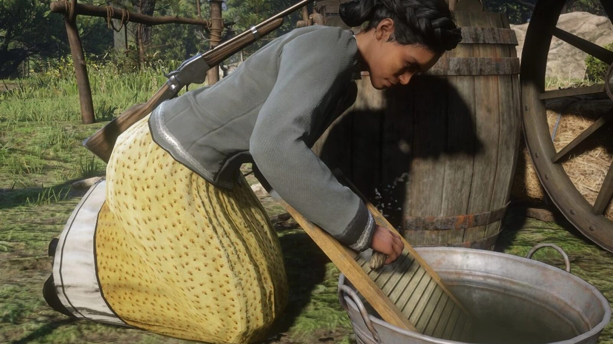
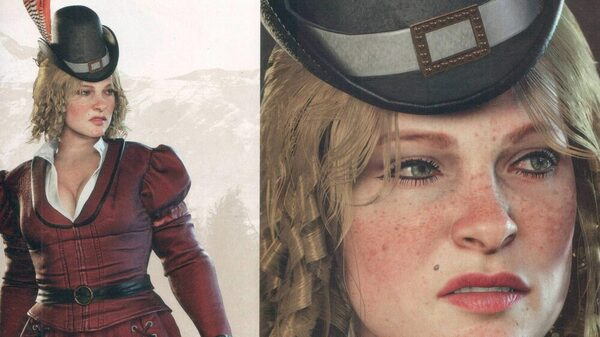
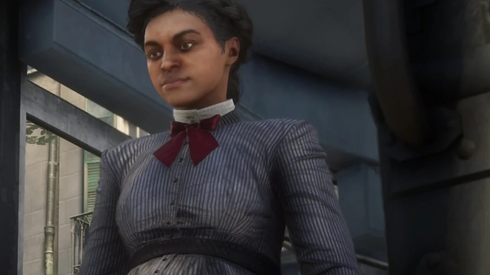

Character · Van der Linde gang
Tilly Jackson
Tilly Jackson is a member of the Van der Linde gang in Red Dead Redemption 2. The daughter of a former slave, she was taken in and raised by Dutch van der Linde, who taught her to read, and she looks on him as a surrogate father.
She is one of the gang's most level-headed members, and one of the few whose story ends well.
- Affiliation
- Van der Linde gang
- Status
- Alive (survives RDR2)
- Nationality
- American
- Later name
- Tilly Pierre
- Games
- Red Dead Redemption 2
Biography
The Foreman Brothers
Before the gang, Tilly was taken at twelve by the Foreman Brothers gang. She killed Malcolm Foreman when he made advances on her, then left. In Chapter 4, the Foreman Brothers kidnap her again; Susan Grimshaw sends Arthur to rescue her, and Tilly asks him to spare Anthony Foreman.
Loyal to the end
Tilly rides with Arthur on stagecoach jobs and confides in him about life as a Black woman in the hostile South. At Beaver Hollow she hides a young Jack Marston from the Pinkerton raid and flees with him. In the final chapter, Arthur gives her his share of the money and tells her to live a good life.
Personality
Tilly is calm, kind and loyal. She dreams of having children of her own, inspired by her time looking after Jack.
Relationships

Dutch van der Linde
The gang leader who raised her and taught her to read; a surrogate father.

Arthur Morgan
Fellow gang member she rides with and confides in; he gives her his money at the end.

Karen Jones
One of the gang's three women, alongside her and Mary-Beth.
Fate
Tilly survives Red Dead Redemption 2. In the epilogue she has married a lawyer named Pierre and has a daughter, and John meets her on a bench in Saint Denis. She writes to John that her family lives well, and that she still sees Mary-Beth Gaskill often.
Behind the scenes
Tilly Jackson appears in Red Dead Redemption 2 (2018). She is voiced by Meeya Davis.
Trivia
- Dutch found her in trouble, took her in and taught her to read.
- Her one confirmed kill before the gang is Malcolm Foreman.
- By 1907 she is expecting a second child.
Gallery
